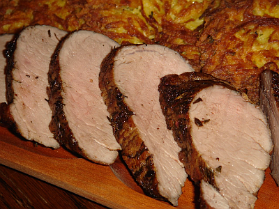

|
|
|
Egybesült karaj recept |
|
|  |
Hozzávalók / 6 adag
|
SztoriEgy jól elkészített egészben sült hús remek kísérője lehet egy főzeléknek, vagy bármilyen más köretnek, másnap pedig kitűnő adalék egy jó szendvicshez. Sok probléma pedig nincs az elkészítésével, csak idő kell hozzá. Próbáljátok ki Ti is! |
asd |
| asd | |